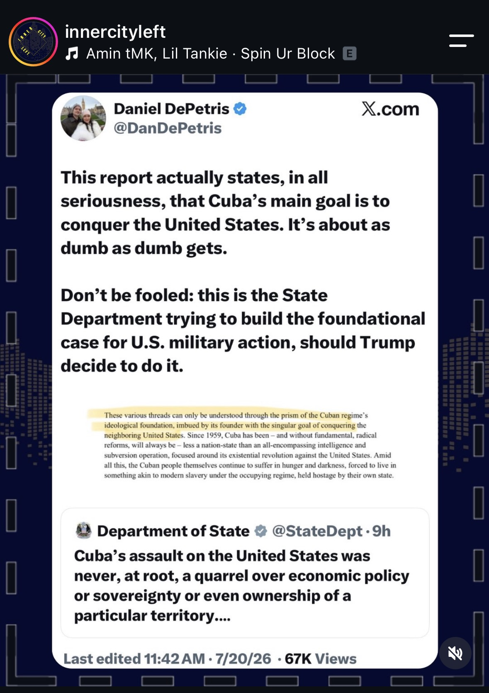

The propaganda machine is working hard on Cuba as the U.S. released a far-fetched "report" on the Island's aspirations. The U.S. is also hard at work in Venezuela, Colombia and Ecuador. . . . Support our work by contributing to our Patreon or purchasing/streaming our work (merch store now open)
Claims checked
In July 2026 the US State Department released a report titled "Cuba: The Capital of 21st Century Communism" that describes the Cuban regime's founding, singular goal since 1959 as conquering the neighboring United States.
The report is a real State Department document dated July 20, 2026, published on state.gov. The paragraph highlighted in panel 1 ('imbued by its founder with the singular goal of conquering the neighboring United States... Since 1959, Cuba has been... less a nation-state than an all-encompassing intelligence and subversion operation') matches the department's published text. DePetris's on-card quotation is accurate; his added claim that this is groundwork for military action is his interpretation.
The report links Cuba to a wide range of US movements — George Floyd protests, campus uprisings, Antifa and anti-ICE protests — and situates it alongside rival states such as Russia, China and Iran.
The report explicitly ties Cuba to US extremist movements 'from the Black Panthers and the Weather Underground through to Antifa' and to 'anti-ICE collectives, socialist groups' and George Floyd-era protests, as reported by The Hill and Yahoo/AP. The Russia-China-Iran linkage is looser: officials cite China and Russia collecting intelligence near bases in Cuba, but Dr. CBS's 'container of all un-American action' phrasing is his own mockery, not a direct quote.
Cuba is receiving roughly $100 million in US humanitarian aid.
Referenced sarcastically in panel 3. Secretary Rubio announced a $100 million assistance commitment; Cuba accepted it in May 2026, and the first flight of food and hygiene supplies (distributed via Catholic Relief Services, not the Cuban government) departed Miami on July 21, 2026.
Cuba successfully refined heavy crude oil for the first time using domestically developed methods, eliminating the need for imported naphtha that had been scarce due to US sanctions.
Confirmed via Cuban state outlets and officials: CUPET/CEINPET refined domestic heavy crude into diesel, naphtha and fuel oil, with deputy director Irenaldo Perez Cardoso saying it removes the need for imported naphtha long constrained by US sanctions. Caveat: the 'first time' and 'major breakthrough' framing originate with Cuban state entities and are not independently audited; the aggregator (Pubity) restates the Cuban claim.
The US has collected about $13bn of Venezuela's oil money and it is unclear where the funds have gone (per the Financial Times).
The FT reported the US collected more than $13bn from Venezuelan oil sales after taking control of exports in January 2026, with only about $300 million publicly traceable to Caracas, prompting bipartisan calls for transparency. The panel accurately reproduces the FT headline it quotes.
The Trump administration bombed Venezuela and removed/captured its president.
On January 3, 2026 US forces struck Caracas and captured President Nicolas Maduro and his wife, flying them out to face US drug-trafficking charges — the largest US military operation in Latin America since the 1989 Panama invasion. Khalek's word 'kidnapped' and 'theft of resources' are her framing; the underlying facts (strikes plus capture of the president) are established.
Colombia's president-elect says he will open an embassy in Jerusalem and withdraw the country's ICJ complaint/intervention against Israel.
President-elect Abelardo de la Espriella's incoming government (foreign minister Omar Bula) confirmed to Israel it will withdraw from South Africa's ICJ genocide case against Israel and open a Jerusalem embassy, reversing outgoing President Petro's policy. He takes office August 7, 2026. The Al Jazeera headline quoted in the panel matches this reporting.
America rigged Colombia's elections.
This is the reposter's assertion (panel 6), not part of the Al Jazeera item it wraps. De la Espriella won the June 21 runoff by about 251,000 votes; EU and OAS observers endorsed the result and reported no irregularities. Outgoing President Petro alleged 'algorithmic fraud' and US/Israeli interference but provided no evidence, and Cepeda conceded. The rigging claim is an unproven allegation contradicted by international monitors.
Human Rights Watch says civilians — farmers and fishermen — faced attacks and abuse in joint US-Ecuador anti-drug operations between January and March 2026.
HRW's 94-page report 'A Dangerous Partnership' documents drone attacks on Ecuadorian fishing vessels near the Galapagos (one boat vanished with eight crew), detention and torture of civilians, and munitions strikes on properties during joint operations Jan-March 2026, with crews reporting US personnel in military uniforms. The Al Jazeera article shown in panel 7 accurately summarizes it.
Interpretation (ungraded)
- This is the State Department trying to build the foundational case for U.S. military action against Cuba, should Trump decide to do it (DePetris).
- The report is 'about as dumb as dumb gets' / 'nothing short of laughable' (DePetris, Dr. CBS).
- 'Schrödinger's Cuba' — mocking the report as internally contradictory, casting Cuba as both destitute and an all-powerful infiltrator (McMillen).
- 'Obvious corruption and theft of Venezuela's resources... Barbaric times' (Khalek).
- 'The propaganda machine is working hard on Cuba' and the report is 'far-fetched' (innercityleft caption).
What the sources establish
This carousel from the account @innercityleft stitches together several genuine, recent developments to argue that the United States is mounting a coordinated pressure campaign across Cuba, Venezuela, Colombia and Ecuador. The anchor is real: on July 20, 2026 the State Department published a report titled Cuba: The Capital of 21st Century Communism, which frames Cuba since 1959 as an 'intelligence and subversion operation' whose founding goal was 'conquering the neighboring United States,' and which links Havana to US movements ranging from the Black Panthers and Weather Underground to Antifa, anti-ICE collectives and George Floyd-era protests. The panels quoting that document and mocking it (DePetris, Dr. CBS, McMillen) reproduce its language accurately; their characterizations of it as war-groundwork or as 'laughable' are opinion.
The surrounding claims also check out against strong sources. The US did capture Venezuelan President Nicolas Maduro after striking Caracas in January 2026, and the Financial Times reported roughly $13bn in collected Venezuelan oil revenue with only about $300 million publicly traced. Cuba's state oil sector announced it refined domestic heavy crude without imported naphtha (a claim originating with Cuban officials), and Washington is delivering a $100 million aid package via the Catholic Church. Human Rights Watch's July 21 report A Dangerous Partnership documents drone strikes on Ecuadorian fishing boats and abuse of civilians in joint US-Ecuador operations. Colombia's incoming president-elect has indeed said he will open a Jerusalem embassy and drop the ICJ case against Israel.
The one factual overreach is the reposter's caption on panel 6 that 'America rigged Colombia's elections.' That is an unproven allegation, advanced by outgoing President Petro without evidence and contradicted by EU and OAS observers who found no irregularities; the losing candidate conceded. Everything else in the post is grounded in real primary documents and mainstream reporting — the disagreement is over interpretation, not facts.
Sources
- Primary U.S. Department of State — Cuba: The Capital of 21st Century Communism
- Secondary The Washington Post — State Dept. again deems Cuba a threat amid talk of U.S. push for regime change
- Secondary The Hill — State Department report links Cuba to protests, including George Floyd
- Primary U.S. Department of State — First Humanitarian Flight to Cuba Under Rubio's $100 Million Commitment
- Secondary MercoPress — Cuba accepts USD 100 million in US humanitarian aid amid energy collapse
- Primary Granma — Santiago de Cuba refinery produced naphtha, fuel oil and diesel from domestic crude
- Weak teleSUR English — Cuba Heavy Crude Refining Technology Breakthrough
- Secondary The London Economic — US has made 'more than $13bn' from Venezuelan oil but no one knows where it's gone
- Secondary IBTimes UK — Trump Faces Scrutiny Over $13B in Venezuelan Oil Cash as Only $300M Is Publicly Traced
- Secondary PBS NewsHour — Live updates: U.S. captures Maduro and his wife after striking Venezuela
- Secondary Wikipedia — 2026 United States intervention in Venezuela
- Secondary The Times of Israel — Colombia to withdraw from ICJ case against Israel
- Secondary Al Jazeera — Ivan Cepeda concedes defeat in Colombia election, sealing right-wing win
- Secondary NBC News — Colombia's president-elect suspends transition after Petro alleges fraud
- Primary Human Rights Watch — A Dangerous Partnership: Abuses, Unanswered Questions, and US-Ecuador Security Cooperation
- Secondary Al Jazeera — Civilians faced attacks, abuse in joint US-Ecuador operations, HRW says
Share this
Nearly every fact in this post is real: the State Department's July 2026 report casting Cuba as a subversion machine, the US capture of Maduro, the FT's $13bn Venezuelan-oil question, Cuba's crude-refining claim, the $100M aid package, and HRW's US-Ecuador abuse report all check out. The one exception is the caption's assertion that 'America rigged Colombia's elections' — an unproven allegation that international monitors contradicted.
Checked against primary sources
CALL AND RESPONSE
Checked against primary sources where available. Researched with AI, reviewed by a human editor.